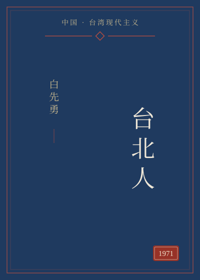
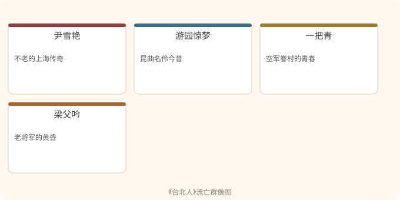

台北人
一、基本信息
| 作者 | 白先勇 |
|---|---|
| 成书/出版 | 1970—71年结集出版（通说待核；Britannica 该页仅载《游园惊梦》1982） Pai Hsien-yung — Encyclopaedia Britannica（百科全书） |
| 国别/地区 | 中国 |
| 时代 | 现当代 · 台湾现代主义 |
| 体裁 | 短篇小说集 |
| 语言 | 汉语（白话） |

《台北人》流亡群像图（主题·结构图）
二、创作背景
Britannica：白先勇为台湾现代主义文学运动领军人物（a leading figure of Taiwan's Modernist literary movement of the 1960s），影响力延续至21世纪（remained influential well into the 21st century——Britannica）。
题材：1949年前后迁台的大陆人群体——『台北人』实为『大陆人』（通说）。
三、内容脉络
十四个短篇：从将军遗孀到舞女、佣人——流亡者的今昔对照（篇数通说待核）。
名篇：《永远的尹雪艳》《游园惊梦》《一把青》《冬夜》（通说）。
四、主要人物表
| 人物 | 身份 | 说明 |
|---|---|---|
| 尹雪艳 | 百乐门舞女 | 永远不老的象征（通说） |
| 钱夫人 | 昆曲名伶 | 《游园惊梦》主人公——今昔之感（通说） |
五、主题与艺术特点
- 乡愁与流亡：今昔对照的挽歌结构（通说）。
- 中国古典韵味与现代主义技法的融合（Britannica：Modernist movement）。
- 群体史诗：一个流亡阶层的浮世绘（通说）。
六、影响与评论
- Britannica：台湾现代主义领军人物，影响力延续至21世纪。
Pai Hsien-yung — Encyclopaedia Britannica（百科全书） - 夏志清评白先勇为『当代中国短篇小说家中的奇才』（通说待核）。
Pai Hsien-yung — Encyclopaedia Britannica（百科全书）
七、阅读建议
难点
- 今昔对照的叙事结构——注意时间层次。
- 昆曲与民初掌故的互文。
- 《台北人》（尔雅出版社/广西师范大学出版社，通说待核）。
先读《永远的尹雪艳》定调 →《游园惊梦》精读 → 全集通读。
八、待核实
- 结集年份（1971年尔雅/晨钟说）待核。
- 篇目十四篇说待核。
- 夏志清评语出处（《白先勇早期的小说》论文）待核。
本页主要来源
白先勇的其他收录作品：台北人